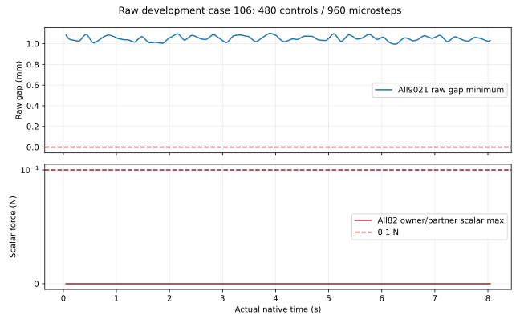

返回128个完整原始窗口
原始对照状态 106
完整开发窗口，480控制步／960物理步；候选配对与正式留出另行验收。
提案 3480；初速度比例 0.5；随机命令幅度 0.05000000074505806 rad。前六槽主判据 True；几何或接触失败 False；硬限位失败 True。

下载完整74关节 q/qd、实际时钟和960步判据曲线（CSV gzip）
此状态没有实际采集相机组。完整 74 关节状态和全部 960 物理步曲线已保留；本页不声明其图像覆盖充分。